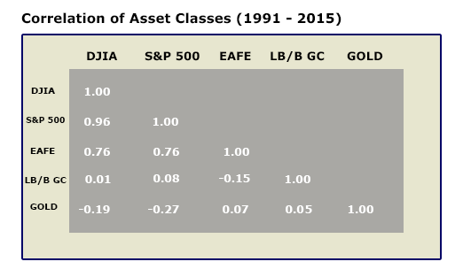

To see how different indices correlate with each other, look at the chart below.

It can be easily seen that some indices have a higher degree of correlation with each other than do others. This is an important phenomenon to understand when evaluating a portfolio. Assets with a high correlation tend to act in the same manner in response to external stimuli. A portfolio of highly-correlated securities does little to add diversification.
Effective diversification should lower portfolio volatility. In other words, the benefit of diversification is that when one asset underperforms, another can compensate. Therefore, to effectively lower volatility in a portfolio, the assets, or asset classes, must have a low degree of correlation. Knowledge of how different asset classes correlate to each other is, therefore, a valuable aid in structuring a portfolio.